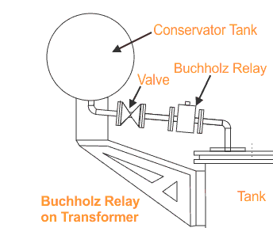
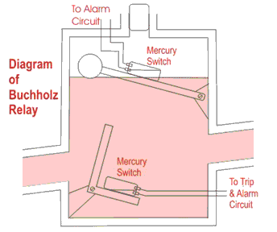

Buchholz Relay in transformer | Buchholz Relay operation and principle
Construction of Buchholz Relay
Buchholz Relay Principle
Buchholz Relay Operation – Certain Precaution
What is Buchholz Relay ?
Construction of Buchholz Relay
Buchholz relay in transformer is an oil container housed the connecting pipe from main tank to conservator tank. It has mainly two elements. The upper element consists of a float. The float is attached to a hinge in such a way that it can move up and down depending upon the oil level in the Buchholz relay Container. One mercury switch is fixed on the float. The alignment of mercury switch hence depends upon the position of the float.
The lower element consists of a baffle plate and mercury switch. This plate is fitted on a hinge just in front of the inlet (main tank side) of Buchholz relay in transformer in such a way that when oil enters in the relay from that inlet in high pressure the alignment of the baffle plate along with the mercury switch attached to it, will change.

In addition to these main elements a Buchholz relay has gas release pockets on top. The electrical leads from both mercury switches are taken out through a molded terminal block.
Buchholz Relay Principle
The Buchholz relay working principle of is very simple. Buchholz relay function is based on very simple mechanical phenomenon. It is mechanically actuated. Whenever there will be a minor internal fault in the transformer such as an insulation faults between turns, break down of core of transformer, core heating, the transformer insulating oil will be decomposed in different hydrocarbon gases, CO2 and CO. The gases produced due to decomposition of transformer insulating oil will accumulate in the upper part the Buchholz container which causes fall of oil level in it.
Fall of oil level means lowering the position of float and thereby tilting the mercury switch. The contacts of this mercury switch are closed and an alarm circuit energized. Sometime due to oil leakage on the main tank air bubbles may be accumulated in the upper part the Buchholz container which may also cause fall of oil level in it and alarm circuit will be energized. By collecting the accumulated gases from the gas release pockets on the top of the relay and by analyzing them one can predict the type of fault in the transformer.
More severe types of faults, such as short circuit between phases or to earth and faults in the tap changing equipment, are accompanied by a surge of oil which strikes the baffle plate and causes the mercury switch of the lower element to close. This switch energized the trip circuit of the circuit breakers associated with the transformer and immediately isolate the faulty transformer from the rest of the electrical power system by inter tripping the circuit breakers associated with both LV and HV sides of the transformer. This is how Buchholz relay functions.
Buchholz Relay Operation – Certain Precaution
The Buchholz relay operation may be actuated without any fault in the transformer. For instance, when oil is added to a transformer, air may get in together with oil, accumulated under the relay cover and thus cause a false Buchholz relay operation. That is why mechanical lock is provided in that relay so that one can lock the movement of mercury switches when oil is topping up in the transformer. This mechanical locking also helps to prevent unnecessary movement of breakable glass bulb of mercury switches during transportation of the Buchholz relays.
The lower float may also falsely operate if the oil velocity in the connection pipe through, not due to internal fault, is sufficient to trip over the float. This can occurs in the event of external short circuit when over currents flowing through the winding cause overheated the copper and the oil and cause the oil to expand.
 by
by